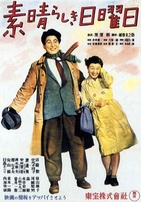

One Wonderful Sunday
Starring: Ichirō Sugai
Director: Akira Kurosawa
Writer: Akira Kurosawa
Producer: Sōjirō Motoki
One Wonderful Sunday (Japanese: 素晴らしき日曜日, Hepburn: Subarashiki Nichiyōbi) is a 1947 Japanese film directed by Akira Kurosawa and co-written by Kurosawa and Keinosuke Uekusa. The film was produced by Sojiro Motoki for Toho and stars Chieko Nakakita and Isao Numazaki.
Trivia
- One Wonderful Sunday was produced by Toho in 1947.
- The film was conceived in the aftermath of a series of labour strikes that led the stars of Akira Kurosawa's previous film, No Regrets for Our Youth (1946), to defect from the studio and form Shintoho.
- The film was written by Kurosawa and his childhood friend Keinosuke Uekusa.
Filming Locations
- The use of this camera caused several problems when bystanders, unaware that a film was being shot, ended up obscuring planned shots, including one man at Shinjuku Station who assumed Kurosawa was a pickpocket when he tried to nudge him out of the camera's view.
Previous Showings
1 Run • 1 Festival
All runs on record (1):
- March 3 - 5, 2010Akira Kurosawa Film Festival 2010w/ Ikiru